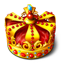

Awards and Prizes
Though we do cherish all the moments that we have had in the Club, Awards somehow make us feel proud of what we are and what we can do... Some of our recent achievements are:
Year 2010-2011
Awards by
Rotaract District 3190
Best Supporting Club
Best Executive Council Members
Rtr. Asha Sharath, Rtr. Pooja Nayak
Special recognition for contribution to
Aarambh
Rtr. Avinash Kalasa
Year 2009-2010
Awards by
Rotary District 3190
Best Club - 2009-10
Best President
Rtr. Pooja Nayak
Best Secretary
Rtr. Vineet Angadi Hiremath
Awards by
Rotaract District 3190
Best Club - 2009-10
Outstanding Project
"DISHA" - Artificial Limb Donation
Best President
Rtr. Pooja Nayak
Year 2008-2009
Award by
Rotary International
2009 Rotaract Outstanding Project South Asia
Educating Impoverished Children
Awards by
Rotaract District 3190
Best Club - 2008-09
Outstanding Project
AARAMBH '09
Best Secretary
Rtr. Amrish Kothari
Best club - District Relations
Best club - Installation
Best club - DRR's Official Visit
R.I. Presidential Citation
DG's Citation
DRR's Citation
Year 2007-2008
Award by
Rotary International
2008 Rotaract Outstanding Project South Asia -
AARAMBH '08
Awards by
Rotaract District 3190
Best Club - 2007-08
Outstanding Project
AARAMBH '08
Oustanding Rotaractor
Rtr. Amrish Kothari
Best club in Community Service
DRR Citation for Rotaract Jayanagar
Prompt Reporting
R.I. Presidential Citation
R.I. Citation for World Rotaract Week
Year 2006-2007
Awards by
Rotaract District 3190
Best President Award
Rtr. Sharath KB
Oustanding Rotaractor
Rtr. Haasine C
Best Project
Artificial Limb Donation
Best Club in Professional Development Avenue
DRR Citation for Rotaract Jayanagar
Best Supporting Club
Prompt Reporting
R.I. Presidential Citation
R.I. Citation for World Rotaract Week
Year 2005-2006
Awards by
Rotaract District 3190
Best Project
AARAMBH '06
Best Club in Professional Development Avenue
DRR Citation for Rotaract Jayanagar
Best Supporting Club
Prompt Reporting
Best Club in Club Service Avenue